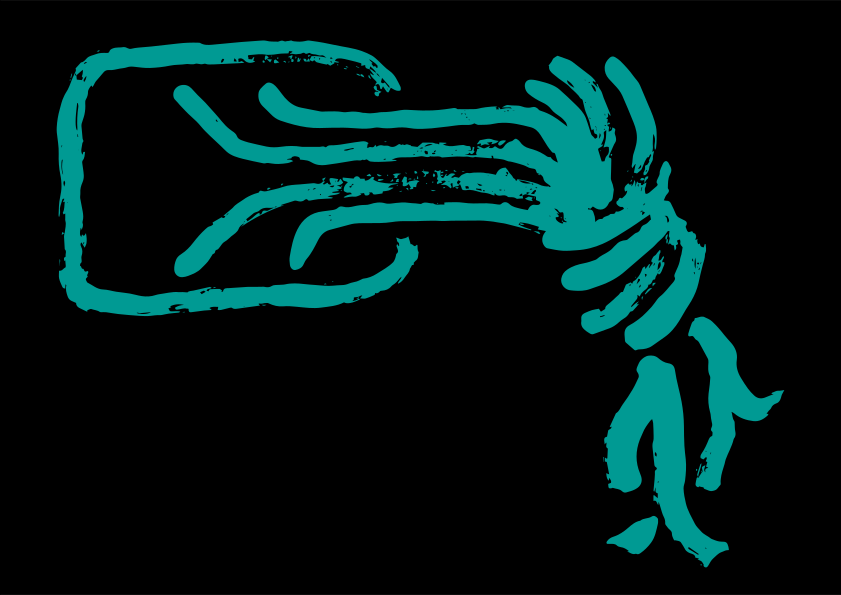
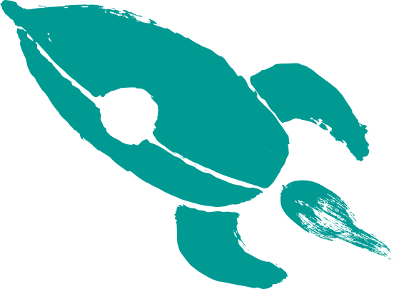
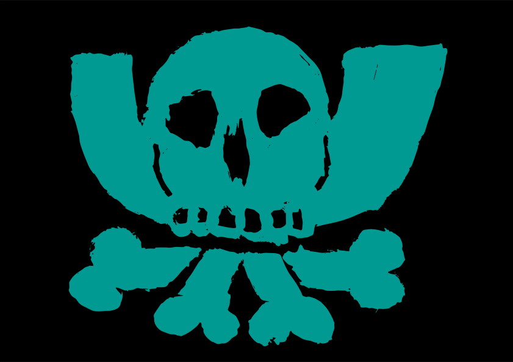

35c3 
Original
Mirror
Eigen
Design
- Design Styleguide
- Rot (C:40, M:100, Y:85; R:164, G:28, B:49)
- Hellblau (C: 65%; R: 0, G: 204, B: 255)
- Lila (C: 20%, M: 70%; R: 255, G: 51, B: 255)
- Gelb (C: 5%, Y: 86%; R: 255, G: 255, B: 51)
- Hellgrün (C: 49%; Y: 97%; R: 153, G: 204, B: 0)
- Orange (M: 71%, Y: 94%; R: 255, G: 102, B: 0)
- Dunkelblau (C: 90%, M: 100%, Y: 33%, K: 21%; R: 51, G: 0, B: 102)

  